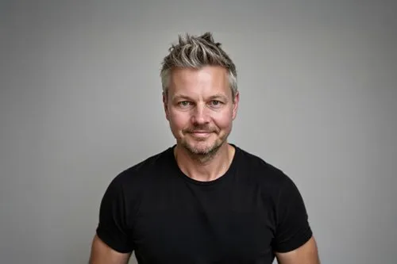

A residential studio, one house at a time.

Phil started the studio in 2005.
“I wanted a practice that did fewer houses, better. One where the person at the first meeting is the person on site for the last snag.”
Phil Coffey is the Founding Director of Coffey Residential. He holds a DipArch, BSc and is ARB registered. Before founding the studio he worked across cultural and residential projects in London; he was named Young Architect of the Year by the Architects’ Journal in 2012.
Twenty years in Clerkenwell — Kingsway Place, then Great Sutton Street, now 104–110 Goswell Road. Phil lives in Clerkenwell too.
The studio works on a handful of new houses and whole-house refurbishments each year, with Phil on every one. The most recent recognition is Homes Architect of the Year at the 2025 British Homes Awards. The work has been shortlisted for the RIBA House of the Year three times.
What we believe a house is for.
A house is the room you spend the most time in, the stair you climb every day, the window you look out of when you’re thinking. We design houses to be calm in the hand and patient over time — built well enough that they don’t need to be redone in a decade, restrained enough that they don’t date in five years.
Most of our work begins with an existing house: a Victorian terrace, a 1930s semi, a country place that has been added to four times. We are interested in the question of how to make these houses work for the way people actually live now, without erasing what makes them worth keeping.
When we do build new, we build with the same care: brick that will weather for a century, oak floors that get better with use, glass that closes properly. The work is residential because we believe the house is the most important building you ever commission.
Four things we mean.
Quiet over loud.
A house should be calm to live in. Strong ideas, restrained delivery. The work doesn’t need to announce itself.
Light is the brief.
We design plans around how daylight moves through them. Rooms placed for the sun they get, not the wall they share.
Detail at one-to-one.
Every junction, joint and reveal is drawn at full size. Most decisions a house lives or dies by are made at this scale.
The same people, all the way.
The people who sketch the first idea are on site for the last snag. Continuity from brief to handover.
The people you’ll work with.
The people you meet at the first conversation are the people doing the work.
Project delivery and technical leadership across the studio.
Design leadership and concept development.
Project lead on residential commissions across London.
Detailing, technical design and on-site delivery.
Project architect on new houses and whole-house refurbishments.
Drawing, modelling and resolution; on site for site visits and snag.
Drawing, modelling, on-site measurement and detail studies.
What it’s like to work with us.
Six clients on the experience — the conversations, the decisions, the year on site.
“We’d not used an architect before, and it was a revelation. Phil Coffey and his team are a hugely talented bunch, and spending time with them was a privilege from start to finish.”
“The level of design quality, professional skill and personal engagement across the team was outstanding throughout.”
“I considered a number of practices before deciding to go with Coffey because I felt they really understood what I wanted from my home. Phil and Michael managed the process from start to finish with such diligence, that I didn’t really have any unwanted burdens on my time.”
“I highly recommend working with Phil and his team if you want to build a home to be proud of, filled with awards, and have fun during the process.”
“He interpreted exactly what we were looking to do, and his team worked very well with us and the contractor. The standard of his professional approach to the whole project was excellent.”
“Phil has a great eye for detail and brought wonderful light and functionality to the build. He helped us maximise every room without sacrificing the look and feel of our home.”